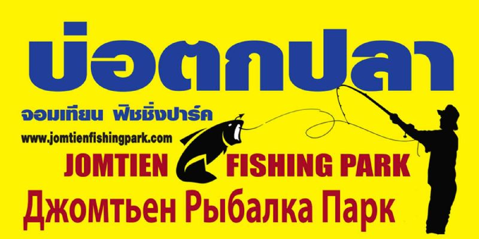
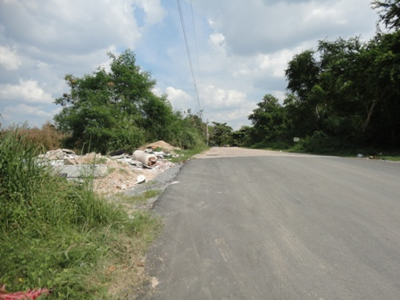

Рыбалка в Паттайе. Джомтьен фишинг парк.
Рыбалка - одно из любимых развлечений для увлекающегося человека. Неудивительно, что в Паттайе большой выбор мест для рыбалки. Одно из них расположено в районе Джомтьен на уровне Сои 14, около двух километров от места разветвления первой и второй улицы Джомтьен.

Добраться туда ты можешь на мотобайке или такси, либо на тук-туке а потом пешком. Просто доедь на тук-туке до Сои 14 и иди по ней, пока не дойдешь до места. Если едешь на мотобайке по второй улице, постарайся не пропустить поворот, в конце которого находится парк:

Рыбу здесь разводят специально для туристов, и есть ее нельзя. В наличии персонал, который и поможет и подскажет, и подождет чаевых. Ловят здесь сомов (pla suwai). Рыбы очень много. Сомы небольшие, до 10 килограммов, большая часть 5-10 кило.
Все что поймал, нужно отпустить, предварительно сфотографировавшись, конечно. Тут же можно подкрепиться, тайцы ловят рыбу поменьше и готовят ее недорого.
Стоимость рыбалки - 200 бат со своей удочкой, 40 бат за кило наживки. Аренда удочки на день выйдет 350 бат.